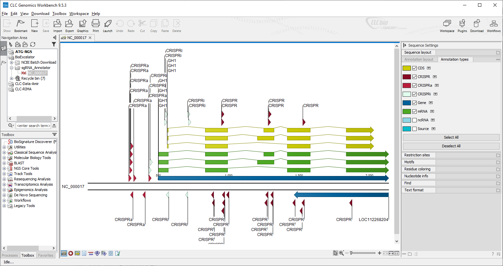

sgRNA Annotator
An Excel-based tool to pick CRISPR sgRNAs (knockout, activation, inhibition) from genome-wide libraries
Don't miss out this if you frequently design sgRNAs for human and mouse!

A macro-enabled Excel workbook (CRISPRn_annotator_v1.0.xlsm), which could be used to quickly select paired-sgRNAs for CRISPR-mediated gene knockout experiments. A similar Excel workbook (CRISPRai_annotator_v1.0.xlsm) can be used for picking sgRNAs for gene activation/inhibition experiments. All sgRNAs were collected from the previously reported genome-wide sgRNA libraries. Excel files automatically download the genbank files from NCBI, and annotate the CRISPRs.

Supported systems
- MacOS
- Windows
Download files from my Github repositiry
Watch the instructions on my YouTube channel